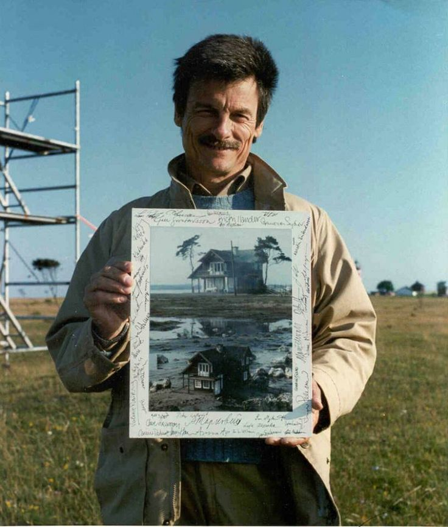
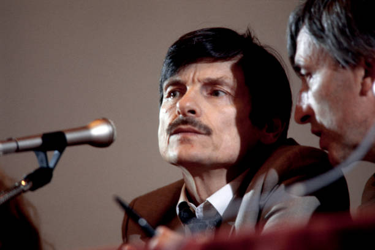

Andrei Tarkovsky en su juventud

Tarkovsky dirigiendo una escena
Retrato de Andrei Tarkovsky
Tarkovsky en el set de rodaje
Andrei Tarkovsky en una entrevista
Tarkovsky durante la filmación de 'Solaris'
Andrei Tarkovsky en el festival de cine
Tarkovsky revisando el guion
